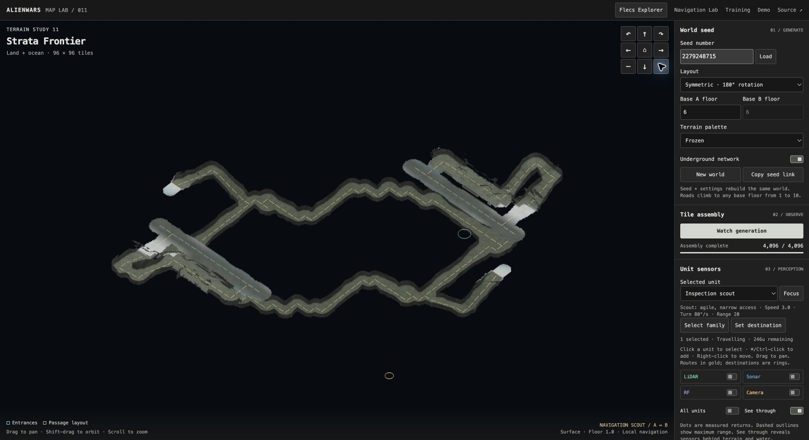
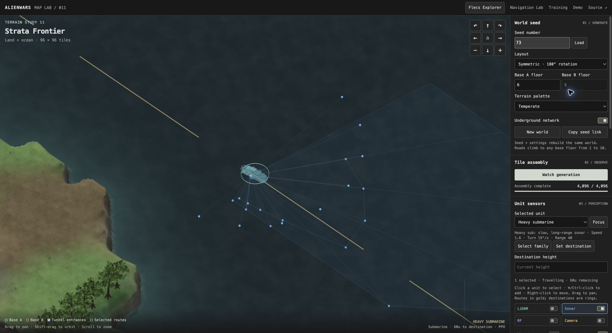
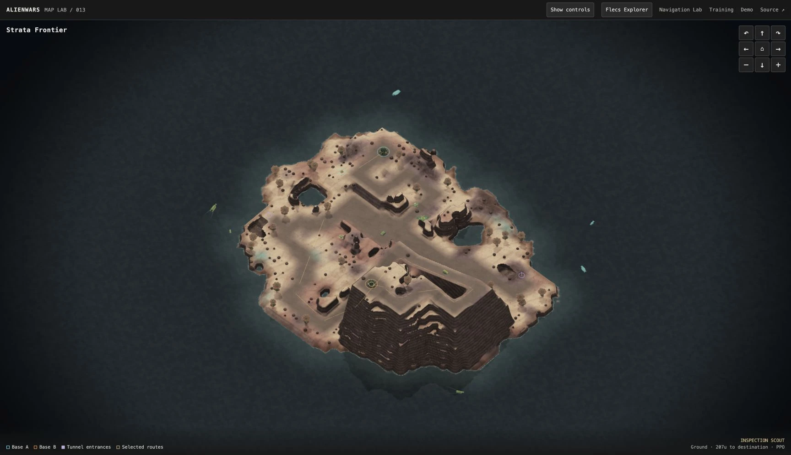

GEOMETRY / ~3 MIN
Where does a tunnel fit?
Toggle Isolate tunnels without moving the camera. Trace entrances and ramps back to the terrain. Which passages keep a ceiling, and which open to the sky?
Inspect this network ↗THE ALIENWARS WORKSHOP / 01
Take the controls, make a prediction, and see what happens. Then bring your coding agent and change a little of the world yourself.
Browser experiments need no installation, account or GPU.

FIRST EXPERIMENT / BROWSER ONLY
A submarine can sense its surroundings even when you hide the lines on screen. Discover which controls change the picture—and which change the policy’s inputs.
Choose a prediction, then test it in the world.
Opens Map Lab in a new tab. Leave this guide beside it. First generation can take tens of seconds.
| Your change | On screen | Inside the policy |
|---|---|---|
| Hide the overlay | Sonar fan disappears | Measurements remain available |
| Detach the module | “Not attached” | Missing-equipment mask; no sonar returns |
| Reattach sonar | Valid returns resume | Scheduled measurements resume |
The unit still has other sensors and A* route guidance, so removing sonar does not guarantee an immediate turn. This experiment tests perception, not navigation quality. Zero hits can be a valid reading; sonar also needs a submerged mount above the seabed.
Seed links save the world and overlay settings, not equipment edits. Reload Map Lab to restore default equipment.
sensors.h attaches the module, samples geometry, and packs its observation. missions.h builds the policy input. alienwars.c connects the inspector; web/maplab/shell.html handles the two switches.
KEEP EXPLORING

Toggle Isolate tunnels without moving the camera. Trace entrances and ramps back to the terrain. Which passages keep a ceiling, and which open to the sky?
Inspect this network ↗
Start with unequal base heights, then select Symmetric and load the same seed. Compare bases and routes. Wave Function Collapse joins local tiles; global planning sets the larger layout.
Compare the layouts ↗YOUR OWN WORKSHOP
Start with the included browser build and trained policies. No compiler or GPU needed. Install Git and uv, then run:
git clone https://github.com/rozgo/alienwars-gym.git cd alienwars-gym uv sync --locked uv run scripts/doctor.py uv run python -m http.server 8781 --bind 127.0.0.1 --directory docs
Open http://127.0.0.1:8781/learn/. Stop with Ctrl+C. If the port is busy, use 8782. The doctor explains missing prerequisites before you build anything.
Read AGENTS.md and .agents/skills/alienwars-start/SKILL.md. Help me run AlienWars locally and complete docs/lessons/sensor-equipment.md. Explain the prediction, show me the result, and point me to the code behind it.
The skill lives in the repo. If your agent does not discover it automatically, this explicit file-reading prompt gives it the same workflow. You can also follow every step by hand.
Serving the included build will not show C or web-shell edits. Run uv run scripts/doctor.py --target web, follow the compiler setup, then rebuild with uv run scripts/build_fleet_site.py. Native development is available on macOS and Linux.
FROM EXPLORATION TO LEARNING
Shared terrain, bodies, collision and live entity state.
LiDAR, sonar, radio and depth measurements, plus odometry.
Planned global routes with learned local control adjustments.
Five family policies train together on a CUDA host.
Local simulation, policy inference and a view into the world.
Does a change improve arrivals on unseen worlds? Compare against the route tracker, count contacts and stalls, and keep evaluation separate from training.
The current demo uses evaluated contract-2 policies. Newer contract-3 candidates failed their release gates. Automatic patrol restarts keep the demo running; they are not successful arrivals or learned recovery.
Cultivation and combat are future work. Every military unit is a biological entity; this universe has no humans or pilots.